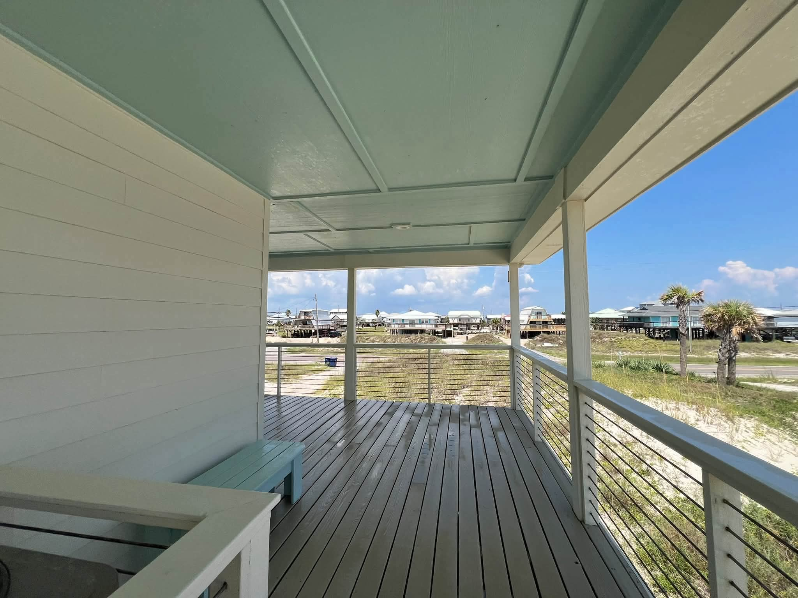

From the blog
Holiday Guest Ready: Home Cleanups Before Thanksgiving
October 12, 2026

Thanksgiving is closer than it feels, and family and friends are about to see your house up close. The inside is your territory. The outside is where we come in. Fall in Mobile is one of the best windows of the year for exterior work: the brutal heat is gone, the rain lets up, and there is still time to get on the schedule before the holiday rush. Here is what to tackle now.
House soft wash: the big visual win
Nothing changes the look of a home faster than washing the siding. Our summers leave a film of mildew, algae, and pollen on everything, and by October most houses show it. We use a soft wash, low pressure with a cleaning solution, so there is no risk to your siding, paint, or landscaping. One story homes run from $349 for a smaller home up to $899 for a large one story, with two story quoted by size. It is the single biggest curb appeal upgrade you can buy before guests arrive.
Driveway and walkways
Your guests park in the driveway and walk to the front door. If the concrete is dark with mildew and clay stains, they notice before they ever knock. A driveway wash runs from $149 for a short driveway, and walkways brighten right up too. Clean concrete also stays safer underfoot. Mildew film gets slippery when wet, and holiday mornings in Mobile can be damp.
Windows worth looking through
Streaky windows age a home fast. If your guests are staying over, they will look out the guest room windows and through the back glass doors. A window wash up to 10 windows is $129, and 11 to 20 windows is $199. Paired with a house wash, the whole exterior reads fresh.
Porch and patio refresh
The porch is where everybody gathers before dinner and after. Pine straw, spider webs in the corners, and dust on the ceiling fans take away from the space fast. Add a patio and porch wash to the visit. It is the cheapest way to make the outdoor space feel put together for the holidays.
When to book
The two weeks before Thanksgiving fill up fast every year. Homes in Saraland, Satsuma, Semmes, Grand Bay, Irvington, and Theodore tend to book earlier as the holiday closes in. If you call in mid October, you pick your day. If you call the week of Thanksgiving, you take what is left. Earlier is better, and the fall weather makes October and early November ideal for the work itself.
The bundle play
Ask us about doing the house wash, driveway, and windows in one visit. One crew, one setup, and your whole exterior is done before you put up the decorations. It is how most of our repeat holiday customers do it every year.
Get guest ready before Thanksgiving.
Kinney Cleaning Services does house washes, driveways, windows, and porches across Mobile County. Veteran owned and operated, with 5-Star Google Reviews.
Call (251) 767-0754 Get a Custom Quote